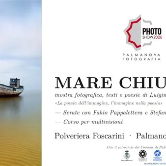

da sab 31 ott a lun 16 nov
Mare chiuso
Dal 31 ottobre al 16 novembre 2026, la Polveriera Foscarini di Palmanova (vicino a Porta Aquileia) ospita Mare chiuso, il progetto fotografico e poetico di Luigino Snidero nato dalla ricerca dell'autore sulle lagune del Friuli Venezia Giulia. Trentotto opere, tra fotografie fine…
 Indicazioni
Indicazioni
- Costi e prenotazioni
- Costo non indicato · Prenotazione non indicata
- Programma
- Programma da verificare. Apri la fonte ufficiale per orari e possibili aggiornamenti.
- In caso di maltempo
- Nessuna indicazione specifica pubblicata.
- Note
- Acquisito automaticamente dalla fonte.
L’EVENTO
Descrizione completa
Mostra fotografica, testi e poesie di Luigino Snidero.
Dal 31 ottobre al 16 novembre 2026, la Polveriera Foscarini di Palmanova (vicino a Porta Aquileia) ospita Mare chiuso, il progetto fotografico e poetico di Luigino Snidero nato dalla ricerca dell'autore sulle lagune del Friuli Venezia Giulia. Trentotto opere, tra fotografie fine art e testi poetici, raccontano il paesaggio lagunare come luogo della memoria e della trasformazione, in un percorso dove fotografia e parola si intrecciano.
La mostra è il fulcro della decima edizione del Palmanova Photo Show, la rassegna promossa dal Circolo Fotografico Palmarino APS BFI, realizzata con il patrocinio del Comune di Palmanova e riconosciuta dalla FIAF.
INAUGURAZIONE
Sabato 31 ottobre, ore 16.30–19.30
Saluti istituzionali e del Circolo Fotografico Palmarino, presentazione del libro Mare chiuso con Luigino Snidero in dialogo con Cristina Noacco, lettura di poesie con Luigino Mior, proiezione di multivisioni fotografiche a tema.
SERATE CON GLI AUTORI
Lunedì 9 novembre, ore 20.30 — Fabio Pappalettera
Lunedì 16 novembre, ore 20.30 — Stefania Tais
CORSO DI MULTIVISIONI
Lunedì 2, giovedì 5, giovedì 12 novembre, ore 20.30
CALENDARIO COMPLETO DI APERTURA
Sabato 31 ottobre: 16.30–19.30 (inaugurazione)
Domenica 1 novembre: 10.00–12.30 / 14.00–17.00
Lunedì 2 novembre: 10.00–12.30 / 19.00–22.00
Martedì 3 novembre: 10.00–12.30 / 14.00–17.00
Mercoledì 4 novembre: 10.00–12.30 / 14.00–17.00
Giovedì 5 novembre: 10.00–12.30 / 19.00–22.00
Venerdì 6 novembre: 10.00–12.30 / 14.00–17.00
Sabato 7 novembre: 10.00–12.30 / 14.00–17.00
Domenica 8 novembre: 10.00–12.30 / 14.00–17.00
Lunedì 9 novembre: 10.00–12.30 / 19.00–22.00
Martedì 10 novembre: 10.00–12.30 / 14.00–17.00
Mercoledì 11 novembre: 10.00–12.30 / 14.00–17.00
Giovedì 12 novembre: 10.00–12.30 / 19.00–22.00
Venerdì 13 novembre: 10.00–12.30 / 14.00–17.00
Sabato 14 novembre: 10.00–12.30 / 14.00–17.00
Domenica 15 novembre: 10.00–12.30 / 14.00–17.00
Lunedì 16 novembre: 10.00–12.30 / 19.00–22.00
Ingresso libero
IL PROGRAMMA
Programma e orari
Appuntamenti raccolti dalle fonti elencate. Dove manca un orario, non è ancora disponibile in questa scheda.
Programma pubblicato
- Dal 2026-10-31 al 2026-11-16
INFORMAZIONI UTILI
Prima di partire
- Controllare la fonte prima di partire.
ORGANIZZAZIONE